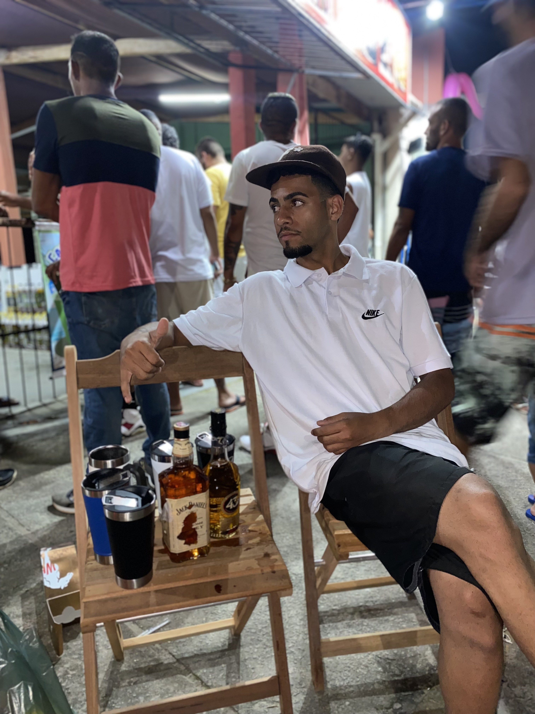
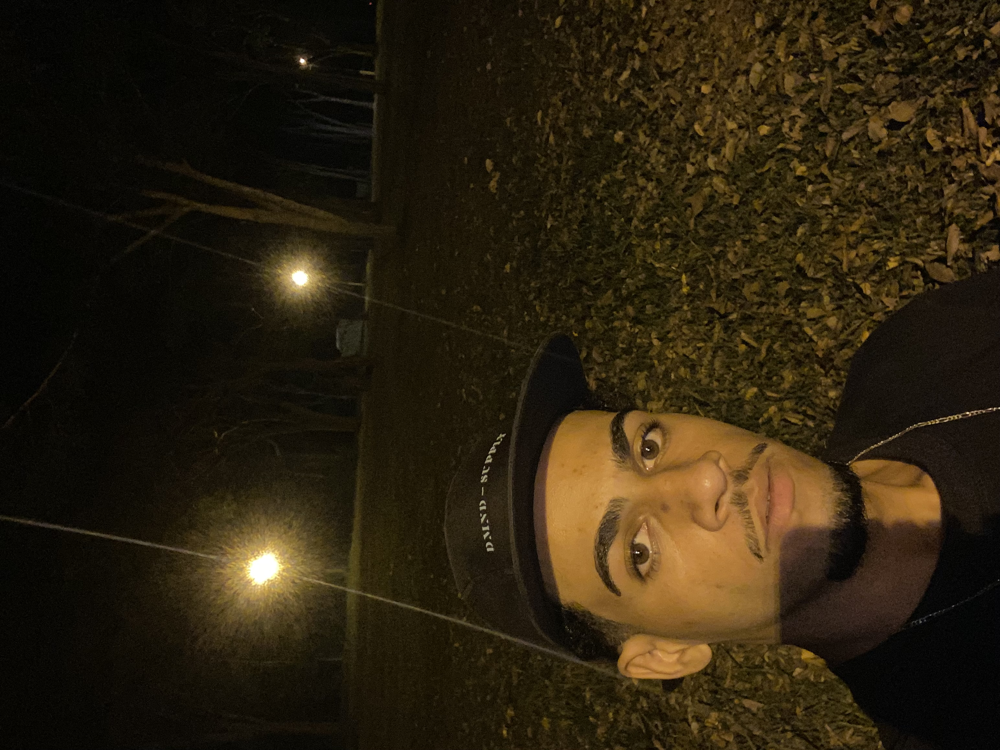

Eric Willian Mota Camargo de Oliveira
-Coisas que eu gosto:
Treinar e atividades fisicas
Ouvir música
Ficar na companhia de amigos
Cerveja
-Coisas que eu não gosto:
Ficar sem fazer nada por muito tempo
Dias chuvosos
Listas
Bebidas fortes
Idade: 20 anos
Time: Santos
Formação: Américo Alves
Trabalho: Ajudante de Confecção

